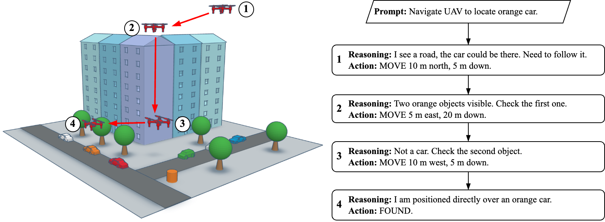
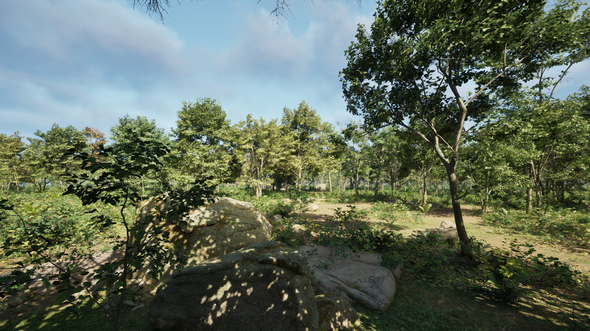
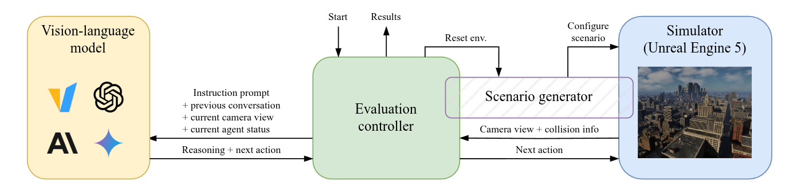
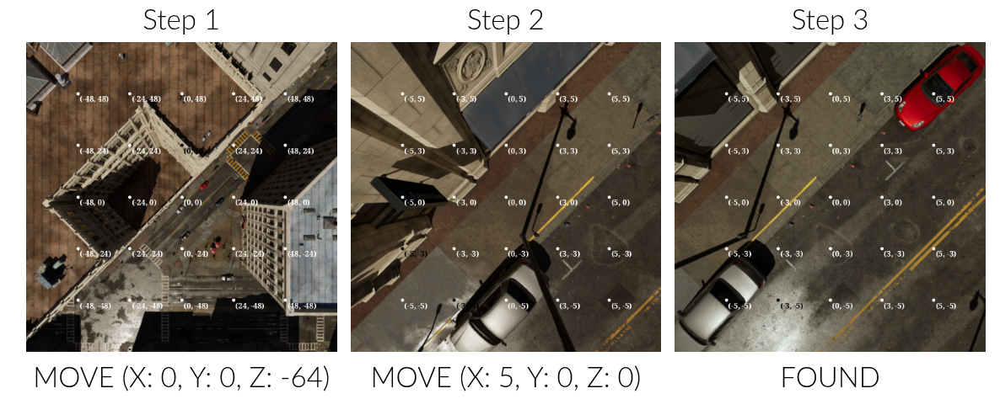

FlySearch: Exploring how vision-language models explore
Adam Pardyl, Dominik Matuszek, Mateusz Przebieracz, Marek Cygan, Bartosz Zieliński, Maciej Wołczyk
NeurIPS 2025 Datasets & Benchmarks Track
Tl;dr
A benchmark for evaluating vision-language models in simulated 3D, outdoor, photorealistic environments. Easy for humans, hard for state-of-the-art VLMs / MLLMs.
Preview
Objective: locate a fire, environment: city, model: GPT-4o.
Video appears to be sped up due to slow frame capture rate.
Leaderboard
| Agent | Progress | FS-1 | FS-Anomaly-1 | FS-2 | ||
|---|---|---|---|---|---|---|
| Overall (%) | Forest (%) | City (%) | Forest (%) | City (%) | City (%) | |
| 🧍 Human (untrained) | — | — | 66.7 ± 4.5 | — | — | 60.8 ± 6.9 |
| 🥇 🤖 GPT-5 | 32.5 | 57.3 ± 6.9 | 38.1 ± 7.6 | 65.0 ± 4.8 | 24.0 ± 4.3 | 5.2 ± 2.1 |
| 🥈 🤖 Gemini 2.0 flash | 27.8 | 42.5 ± 3.5 | 41.5 ± 3.5 | 46.0 ± 5.0 | 25.0 ± 4.4 | 6.0 ± 1.1 |
| 🥉 🤖 Gemini 2.5 flash | 27.5 | 47.4 ± 8.1 | 31.5 ± 7.4 | 55.0 ± 5.0 | 21.0 ± 4.1 | 4.9 ± 2.9 |
| 🤖 Claude 4.5 Sonnet | 25.6 | 55.1 ± 7.4 | 24.3 ± 6.6 | 54.0 ± 5.0 | 17.0 ± 3.7 | 1.6 ± 1.6 |
| 🤖 Claude 3.5 Sonnet | 25.1 | 52.0 ± 3.5 | 30.5 ± 3.3 | 37.0 ± 4.9 | 18.0 ± 3.9 | 6.5 ± 1.2 |
| 🤖 GPT-4o | 23.3 | 45.5 ± 3.5 | 33.5 ± 3.3 | 39.0 ± 4.9 | 15.0 ± 3.6 | 3.5 ± 0.9 |
| 🤖 Pixtral-Large | 15.9 | 38.0 ± 3.4 | 21.5 ± 2.9 | 26.0 ± 4.4 | 4.0 ± 2.0 | 3.0 ± 0.8 |
| 🤖 Qwen2-VL 72B | 8.2 | 16.5 ± 2.6 | 18.0 ± 2.7 | 10.0 ± 3.0 | 5.0 ± 2.2 | — |
| 🤖 Llava-Onevision 72b | 6.0 | 12.5 ± 2.3 | 6.5 ± 1.7 | 11.0 ± 3.1 | 6.0 ± 2.4 | — |
| 🤖 Qwen2.5-VL 7B | 2.2 | 6.0 ± 1.7 | 1.5 ± 0.9 | 3.7 ± 2.1 | 2.0 ± 1.4 | 0.0 ± 0.0 |
| 🤖 InternVL-2.5 8B MPO | 1.8 | 2.5 ± 1.1 | 1.5 ± 0.9 | 6.0 ± 2.4 | 1.0 ± 1.0 | — |
| 🤖 Llava-Interleave-7b | 0.2 | 0.0 ± 0.0 | 1.5 ± 0.9 | 0.0 ± 0.0 | 0.0 ± 0.0 | — |
| 🤖 Phi 3.5 vision | 0.0 | 0.0 ± 0.0 | 0.0 ± 0.0 | 0.0 ± 0.0 | 0.0 ± 0.0 | — |
The Progress Overall (%) metric refers to the average completion percentage of all FlySearch evaluation sets (FS-1, FS-Anomaly, FS-2) by the model.
Join the challenge
If you would like to submit your agent to the leaderboard, please check the submission page. We accept submissions of both standard VLMs/MLLMs and agentic frameworks.
Motivation: Vision-Language Models for Embodied AI exploration
Can Vision-Language Models (VLMs) perform active, goal-driven exploration of real-world environments?
- The real world is messy and unstructured. Uncovering critical information and decision-making requires curiosity, adaptability, and a goal-oriented mindset.
- VLMs offer great zero-shot performance in many difficult tasks ranging from image captioning to robotics.
- The ability of VLMs to operate in realistic, open-ended environments remains largely untested.
Idea: Evaluate VLM exploration skills in 3D open world scenarios
FlySearch -- a new benchmark that evaluates exploration skills using vision-language reasoning.
- Task: locate an object specified in natural language or by visual examples.
- Embodied interaction: control an Unmanned Aerial Vehicle (UAV), observing images obtained from successive locations of the UAV and providing text commands that describe the next move.

Realistic vision-language exploration benchmark
- High-fidelity outdoor environment built with Unreal Engine 5, enabling realistic and scalable evaluation of embodied agents in complex, unstructured settings.
- A suite of object-based exploration challenges designed to isolate and measure the exploration capabilities of VLMs and humans in open-world scenarios.
- Procedurally generated. We can generate an infinite number of vastly different test scenarios.
- Easy to solve for a human, while challenging for popular VLMs. We identify consistent failure modes across vision, grounding, and reasoning.
Our benchmark consists of two types of evaluation environments, forest and city. For each environment, we can generate an infinite number of procedurally generated test scenarios.
-
Forest environment

-
City environment
Standardized evaluation set
We define three levels of difficulty of FlySearch and provide a test set of generated scenarios:
- FS-1: The target is visible from the starting position, but can be just a few pixels wide in the initial view. The object is described by text (e.g. "a red sport car").
- FS-Anomaly-1: The target object is an easy-to-spot anomaly (e.g. a flying saucer/UFO). The object description is not given to the model, the task is to look for an anomaly. Other settings as in FS-1.
- FS-2: The object can be hidden behind buildings or be far away from the staring position. Additional visual preview of the object is given to the model at the start.
Evaluation pipeline
FlySearch consists of three parts besides the vision-language model: the simulator, the evaluation controller, and the scenario generator.

Benchmark environment details
- Initial prompt: Describes the target, provides information on how to perform actions, and the success conditions.
- Observations: During exploration, the model is provided with the current camera view of the UAV (500 × 500 px RGB image, downward-facing camera) and current altitude.
- Action: Relative movement coordinates or the FOUND action (as text), preceded by an unlimited number of reasoning tokens.
- Success condition: The agent has the target's center in its view, is at most 10 meters above it, and responds with FOUND.
More examples
Examples of a successful trajectories in FS-1 performed by GPT-4o. See more examples with complete agent-benchmark conversations here.
Trajectory step by step
Example of a successful trajectory in FS-1 performed by GPT-4o. The agent navigates to red sports car object by first descending and then moving to the right. The first row shows the model’s visual inputs, and the second actions it has taken. Note the presence of the grid overlay on images.

Acknowledgements
Citation
@inproceedings{pardyl2025flysearch,
title = {{FlySearch: Exploring how vision-language models explore}},
author = {Pardyl, Adam and Matuszek, Dominik and Przebieracz, Mateusz and Cygan, Marek and Zieliński, Bartosz and Wołczyk, Maciej},
year = 2025,
booktitle = {{Advances in Neural Information Processing Systems (NeurIPS)}},
volume = 39
}
Contact
For questions, please open an issue on GitHub or contact Adam Pardyl -- adam.pardyl <at> doctoral.uj.edu.pl.